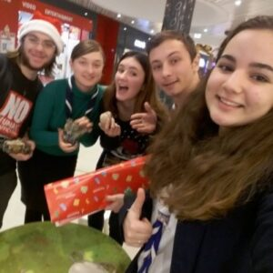

Cadouri împachetate cu bucurie de cercetași!

În perioada 19 – 24 decembrie, cercetașii de la Grupul de Inițiativă Cabana Scout, Organizația Națională “Cercetașii României” alături de Promenada Mall vor împacheta cadourile celor dragi cu multă măiestrie!
Inițiativa este desfășurată an de an de cercetașii din întreaga țară prin proiectul “Ordinul Cadoului Fermecat”, iar în acest an va avea o deosebită rezonanță prin sprijinul și implicarea celor de la Promenada. Cu hârtie colorată, mâini dibace și dexteritate, împreună sperăm să aducem spiritul Craciunului mai aproape de voi!
Acțiunea se va desfășura în perioada 19 – 24 Decembrie, în întervalul orar 12.00 – 20:00, în incinta Promenada Mall, București. Echipa Promenada împreună cu Cercetașii României vor oferi servicii gratuite de împachetare cadouri pentru clienții mall-ului. Clienții fericiți au oportunitatea de a dona pentru a sprijini educația non-formală din România și implicarea în comunitate. Tot la stand-ul cadourilor cu suflet, poți afla mai multe despre mișcarea cercetășească din România și chiar cum poți trăi și tu aventura cercetășiei.
Organizația Națională “Cercetașii României” (ONCR) reprezintă cea mai veche mișcare neguvernamentală de tineret din România, înființată în anul 1913. Cu o tradiție de peste 100 de ani de educație non-formală, în prezent organizația numără aprox. 3500 de membri activi la nivel național, în peste 70 de filiale și sucursale. ONCR este membru fondator al Organizației Mondiale a Mișcării Scout, cu peste 40 000 000 de membri în 216 ţări şi teritorii.
Misiunea Cercetăşiei în societatea româneasca este de a contribui la educarea tinerilor printr-un sistem de valori bazat pe o Promisiune şi o Lege, de a ajuta la construirea unei lumi mai bune, în care oamenii sunt împliniţi ca indivizi şi joacă un rol constructiv în societate.
Cabana Scout este unul dintre grupurile de cercetași ale Organizației Naționale „Cercetașii României”, înființat în anul 2014. Activitățile grupului au un specific non-formal, se desfășoară în București și se adresează copiilor și tinerilor cu vârste cuprinse între 7 și 24 de ani. Mai multe informații despre Grupul de cercetași Cabana Scout puteți găsi pe site-ul sau pe pagina de facebook a Grupului de Inițiativă.